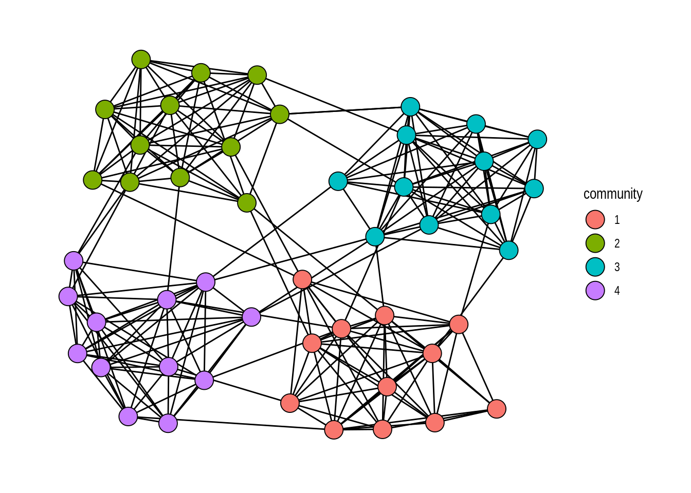
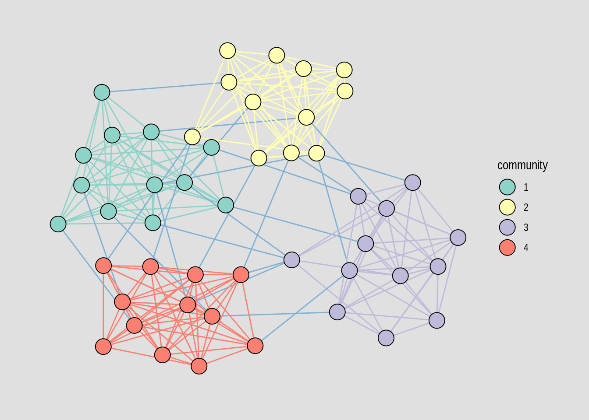

install.packages("tidygraph")
devtools::install_github("schochastics/networkdata")Tidy Network Analysis in R
using the tidygraph package
(last update 2022-08-16)
Introduction
The main focus of this tutorial is to introduce the tidy approach for network analysis. For a general and more basic introduction to network analysis in R, see my dedicated tutorial. The tutorial will focus on the most relevant functions for empirical research. A more complete overview of the complete functionality can be found here.
Required libraries
To run all the code in this tutorial, you need to install and load two packages.
tidygraph implements the tidy approach for network analysis. networkdata contains a diverse set of network dataset. To reproduce the figures in the tutorial, you will also need ggraph. For help with network visualization, see this tutorial
library(tidygraph)
library(networkdata)Make sure you have at least the version given below. Some of the examples may not be backward compatible.
packageVersion("tidygraph")[1] '1.2.1'packageVersion("networkdata")[1] '0.1.11'What is tidy network data?
On first glance, there is not much tidiness in networks or the ways it is usually encoded, like a graph, adjacency matrix, edgelist, etc. How should this fit into a single data frame? If you are an avid igraph user, then you may suspect the answer. It doesn’t fit, but it fits in two with graph_from_data_frame() which takes two data frames, one for nodes and one for edges, as input. In other words, we can represent a network as two separate data frames. One for the nodes and node attributes, and one for the edges and edge attributes. Working with these two data frames together is the premise for the tidygraph package. If you are interested in more technical details on how this is implemented under the hood, see the introductory blog post for the package.
Why tidy network data?
This is a good question. If you aren’t a fan of the tidyverse, then you should probably move along and stick with established packages such as igraph or sna which offer the exact same functionalities (tidygraph actually imports most of igraph). If you appreciate the tidyverse, then there is no need for convincing you that this is a good idea. If you are indifferent, then I hope I can make a case for the tidy framework below. To start off with, the package does a great job to harmonize many network analytic tasks. For instance, you do not need to know all the different centrality indices that are implemented. You simply type centrality_ and press tab in the RStudio console and get all functions that allow the calculation of a centrality index. Other node level functions are accessible via node_*() and edge level measures via edge_*().
The Basics
Graph structures
We’ll use the famous Florentine Family marriage dataset as a running example. The dataset is in igraph format but can be converted to a tbl_graph object with as_tbl_graph().
data("flo_marriage")
flo_tidy <- as_tbl_graph(flo_marriage)
flo_tidy# A tbl_graph: 16 nodes and 20 edges
#
# An undirected simple graph with 2 components
#
# Node Data: 16 × 4 (active)
name wealth `#priors` `#ties`
<chr> <dbl> <dbl> <dbl>
1 Acciaiuoli 10 53 2
2 Albizzi 36 65 3
3 Barbadori 55 0 14
4 Bischeri 44 12 9
5 Castellani 20 22 18
6 Ginori 32 0 9
# … with 10 more rows
#
# Edge Data: 20 × 2
from to
<int> <int>
1 1 9
2 2 6
3 2 7
# … with 17 more rowsThis new graph class just subclasses igraph and simply represents the network in a tidy fashion, printing two data frames, one for nodes and one for edges.
class(flo_tidy)[1] "tbl_graph" "igraph" Any function in R that expects an igraph object as input will also accept a tbl_graph.
The function tbl_graph() can be used to create a network from scratch with two data frames. It is basically equivalent to graph_from_data_frame().
To create random graphs with the usual generators, check out the create_*() and play_*() families of functions.
Standard verbs
The tidy framework, specifically thinking about dplyr, is about providing verbs which help to solve common data manipulation tasks, such as mutate(), select(), filter(), and summarise(). The challange for the tbl_graph objects is that these verbs somehow need to work with two different data frames. The way tidygraph solves this is via a pointer to the data frame which is supposed to be manipulated. This pointer can be changed with the verb activate(). By default the nodes are activated, which can also be seen with the print function (see line 5 in the output of flo_tidy). To activate the edge data frame, simply use activate("edges").
flo_tidy %>% activate("edges")# A tbl_graph: 16 nodes and 20 edges
#
# An undirected simple graph with 2 components
#
# Edge Data: 20 × 2 (active)
from to
<int> <int>
1 1 9
2 2 6
3 2 7
4 2 9
5 3 5
6 3 9
# … with 14 more rows
#
# Node Data: 16 × 4
name wealth `#priors` `#ties`
<chr> <dbl> <dbl> <dbl>
1 Acciaiuoli 10 53 2
2 Albizzi 36 65 3
3 Barbadori 55 0 14
# … with 13 more rowsAny data manipulation would now be done on the edge data frame.
Having “activated” a data frame, many of the known dplyr verbs can be used to manipulate the data frame. The activation process might indicate that edges and nodes can only be manipulated separately, which is certainly not desirable. It is, however, possible to gain access to the edge data frame when nodes are activated via the .E(). Similarly, nodes can be accessed via .N() when edges are activated. In the below example, we activate the edges and create a new edge attribute which indicates if a family is connected to the Medici or not.
flo_tidy <- flo_tidy %>%
activate("edges") %>%
mutate(to_medici=(.N()$name[from]=="Medici" | .N()$name[to]=="Medici"))This particular use case is helpful for visualizations.
ggraph(flo_tidy,"stress") +
geom_edge_link0(aes(edge_color = to_medici))+
geom_node_point(shape = 21, size = 10, fill = "grey66")+
geom_node_text(aes(label = name))+
theme_graph()The dplyr verb filter() can be used to obtain a subgraph that satisfies given conditions on the nodes. Note that in the case that you filter on nodes, also edges will be effected. If a node does not satisfy the condition, then all edges connected to that node disappear. This is not the case for edges though.
flo_tidy %>%
activate("edges") %>%
filter(to_medici) %>%
ggraph("stress",bbox=10) +
geom_edge_link0(edge_color = "black")+
geom_node_point(shape = 21, size = 10, fill = "grey66")+
geom_node_text(aes(label = name))+
theme_graph()Joins
New Verbs
Centrality
The package includes all centrality indices implemented in igraph and additionally all that are made available in the netrankr package. All indices can be found in the function group centrality_*().
flo_tidy %>%
activate("nodes") %>%
mutate(degree = centrality_degree(),
betweenness = centrality_betweenness()) %>%
ggraph("stress",bbox=10) +
geom_edge_link0(edge_color = "black")+
geom_node_point(shape = 21, aes(size=degree,fill=betweenness))+
geom_node_text(aes(label = name))+
scale_fill_gradient(low="#104E8B",high="#CD2626")+
scale_size(range = c(4,10))+
theme_graph()Clustering
Similar to centrality, all clustering algorithms from igraph are available via group_*()
# create random graph with group structure (igraph equivalent is sample_islands())
play_islands(4, 12, 0.8, 4) %>%
mutate(community = as.factor(group_louvain())) %>%
ggraph(layout = 'stress') +
geom_edge_link0() +
geom_node_point(aes(fill = community), shape = 21, size = 6) +
theme_graph()
Coupling this with what we learned above, we can color the edges according to the cluster they belong to.
play_islands(4, 12, 0.8, 4) %>%
mutate(community = as.factor(group_louvain())) %>%
activate("edges") %>%
mutate(community = as.factor(ifelse(.N()$community[from]==.N()$community[to],.N()$community[from],5))) %>%
ggraph(layout = 'stress') +
geom_edge_link0(aes(edge_colour=community),show.legend = FALSE) +
geom_node_point(aes(fill = community), shape = 21, size = 6) +
scale_fill_brewer(palette = "Set3")+
scale_edge_color_brewer(palette = "Set3")+
theme_graph(background = "grey88")
Other node or edge level functions
tidygraphs harmonizes many other available functions in igraph to make them easier accessible. The best way to check what is available is to look at the function groups node_*() and edge_*(). Some simple examples are shown below.
# the node id of the Medici is 9
flo_tidy %>%
activate("nodes") %>%
mutate(dist2Medici = node_distance_to(nodes = 9)) %>%
activate("edges") %>%
mutate(edge2Medici = edge_is_incident(i = 9)) %>%
ggraph("stress") +
geom_edge_link0(aes(edge_color = edge2Medici))+
geom_node_point(aes(fill = dist2Medici),size = 9,shape = 21)+
theme_graph()Shortcomings
The tidy framework works well in general but there are some shortcomings. So far, only basic network analytic methods are supported. This is enough for many tasks but as soon as more advanced techniques are needed, you are forced to switch to the “untidy” way again. A lot of coding but also conceptual work is needed to advance the framework further. For instance, how do ERGMs or SAOMs fit into this? Maybe there is a way to use tidymodels, but that is beyond the scope for now.